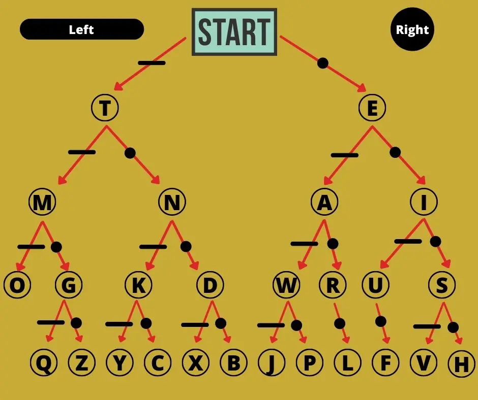

<html></html>
<head>
    <title>n-ary Huffman coding</title>
    <link rel="stylesheet" href="../../style.css">
    <meta name="viewport" content="width=device-width, initial-scale=1">
    <script type="text/javascript" src="https://cdn.jsdelivr.net/npm/mathjax@2/MathJax.js?config=TeX-AMS-MML_HTMLorMML">
    </script>
</head>
<body>
    <h2><a href="/">Adam Scherlis</a></h2>
    <h1>n-ary Huffman coding</h1>
    <em>2025-11-08</em>
<p>Huffman coding is a method for constructing optimal prefix codes! A prefix code is something </p>
<p>As previously alluded to on this blog, a code represents an implicit set of beliefs about the frequency distribution of different kinds of text. Longer codewords represent lower implied frequencies. Prefix codes give each symbol in the alphabet a fixed codeword with a fixed length, so the implied beliefs include "the probability of a symbol is independent of whatever came before it"; this is obviously not true, but it simplifies the encoding and decoding process immensely. Prefix codes are designed so that no delimiters are needed between codewords; no codeword is a prefix of another, so it's never ambiguous whether you've reached the end of an encoded symbol.</p>
<p>You can visualize the codewords of a code with a tree. At every node, you branch in a different direction depending on the next bit (or trit or whatever). Here's an example for Morse code:</p>
<p></p>
<p>Morse code is not a prefix code, so some symbols are placed on internal nodes rather than leaves. For example, "A" is a prefix of "L".</p>
<p>You can also think of this tree as dividing up probability space. At the top, we have 100% probability of some symbol occurring. This is divided into 50% probability of a symbol whose codeword starts with dash (anything to the left) and 50% for dot (anything to the right). This gets subdivided further as we go down the tree. Note that Morse code keeps the most common letters further up, in the high-probability region, and puts the rarest ones at the bottom, with the low-probability long codewords.</p>
<p>In the case of Morse code, once we get past the very top, we need to divide up probability at each node between "left", "right", and "output the symbol here and move on to the next letter". In the case of a prefix code things are simpler; no symbols live on the internal nodes, so it's always a 50-50 split between the two child nodes, until you reach the leaves. If we're building a ternary code, our tree will instead split three ways, etc.</p>
<p>So, given some estimated symbol frequencies, how do we build a tree like this? If the frequencies are all powers of two (or in general, n), it's easy: just make sure each symbol ends up on the appropriate tier. But if not, there will be many ways to approximate the true distribution. We want the tree that provides the shortest expected length for a symbol chosen according to the estimated distribution; this will correspond to the shortest encoded length for a sufficiently long text.</p>
<p>I haven't seen a good derivation of the n-ary case of Huffman coding anywhere, so here's a proof sketch. I'll state lemmas, followed by the general ideas for their proofs.</p>
<p>Let's say we're designing an n-ary code C for an alphabet A of k symbols:</p>
<p>Lemma: Having at most one incomplete node (with fewer than n children), located at the bottom rung of the tree, is optimal (i.e. never suboptimal).</p>
<p>Proof idea: If you have an incomplete node further up, you can move a symbol up the tree, improving expected length. If you have multiple incomplete nodes at the bottom, you can shuffle symbols until all but one node is complete (or a node is empty, at which point it becomes a leaf and can take a symbol).</p>
<p>Lemma: If there is one incomplete node, it will have ((k-2) mod (n-1)) + 2 children.</p>
<p>Sub-lemma: A complete n-ary tree has a number of leaves equivalent to 1 modulo (n-1)</p>
<p>Proof idea: by induction</p>
<p>Lemma: Putting the ((k-2) mod (n-1)) + 2 least-frequent symbols together as children of a node is optimal.</p>
<p>Proof idea: It is optimal to have ((k-2) mod (n-1)) + 2 symbols together at the bottom rung, and swapping them with less-frequent symbols can only improve the expected length.</p>
<p>Lemma: Construct a node whose children are leaves labeled with the least-frequent ((k-2) mod (n-1)) + 2 symbols. Replace it with a leaf, labeled with a new symbol. This gives us a code for a modified alphabet A', where all the child symbols of the original node are replaced with the new symbol. Construct a frequency distribution for A' that is equal to the original distribution for A, except for the new symbol, whose frequency is the sum of the child symbols' frequencies. Construct the rest of the tree, above this leaf, arbitrarily. This new code C' is optimal for this distribution if and only if C is optimal for the original distribution.</p>
<p>Proof idea: The length of C' is one digit shorter than C when one of the child symbols comes up, and equal otherwise. Therefore the expected length of C' is equal to the expected length of C minus P(new leaf), which is a constant that does not depend on the rest of the tree.</p>
<p>Theorem: The following algorithm is optimal: construct a node N whose children are leaves labeled with the least-frequent ((k-2) mod (n-1)) + 2 symbols. Then, (recursive step) carry out this algorithm to construct an optimal code C' for a new alphabet A' where those symbols are merged. Locate the leaf of C' labeled with the new merged symbol and replace it with N, to obtain C, an optimal code for the original alphabet A.</p>
<p>Proof idea: by induction.</p>

</body>
</html>